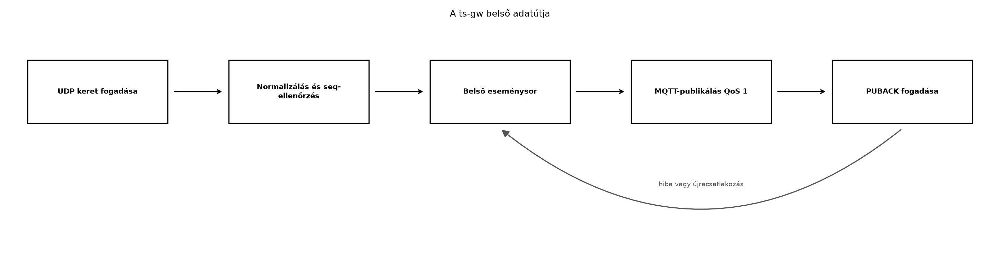

A TerraSense architektúrájában a
ts-node szenzorcsomópont önmagában nem mindig képes
közvetlenül MQTT-t küldeni a brokernek. Valós hardveren gyakran BLE
GATT-értesítéssel adja át az adatot, a szimulációs laborokban pedig egy
egyszerű UDP-datagrammal. A ts-gw az a Linux-gateway, amely
ezt a heterogén eszközoldali forgalmat egységes MQTT-üzenetté alakítja a
felhő felé. Ez a protokollfordítás nem csupán szintaktikai konverzió: a
gateway normalizálja a mezőneveket, kiegészíti az időbélyeget és a
seq sorszámot, elvégzi az alapvető
duplikátum-/sorrendellenőrzést, majd a i028-ban
már bevezetett
terrasense/<site>/<node>/telemetry topicra
publikál. Az alábbiakban egy adapter-alapú, RAII-t használó C++17
gateway-vázat építünk fel, amelyet a későbbi alfejezetek a store-and-forward, az üzemeltetés, a helyi
feldolgozás, a biztonság és a záróprojekt során bővítenek.
Definíció (input adapter). Az input adapter a gateway bemeneti protokollját elszigetelő, lecserélhető programkomponens. Feladata, hogy egy adott forrásból (UDP, BLE GATT, soros port) nyers kereteket fogadjon, azokat előfeldolgozza, és az egységes belépési ponton adja át a gateway többi részének. A többi komponens csak az adapter által kikényszerített absztrakciót ismeri, így a protokollcsere nem érinti a normalizálót vagy a MQTT-publikálót.
Definíció (normalizált telemetria-minta). A gateway
belső eseménye egy olyan, a nyers protokolltól független adatstruktúra,
amely már a TerraSense telemetria-sémát tükrözi: node_id,
monoton seq, UTC eseményidő epoch ms-ban, valamint a mért
értékek. A normalizált minta a belső eseménysoron keresztül éri el az
MQTT-publikáló réteget.
Definíció (belső eseménysor). A belső eseménysor egy szálbiztos FIFO sor, amely az egyik szálon érkező normalizált mintákat pufferként átadja egy másik szálnak. A gatewayben ez a sor választja szét a blokkoló hálózati fogadást a hálózati küldéstől, és lehetővé teszi a feldolgozás ideiglenes túlterhelésének korlátozott kezelését.
A ts-gw belső adatútja az alábbi lépésekből áll:

A folyamatot a következő komponensek valósítják meg:
| Komponens | Felelősség | Megjegyzés |
|---|---|---|
InputAdapter |
absztrakt bemeneti interfész | a UdpInputAdapter ebből származik |
Normalizer |
nyers szöveg → TelemetrySample |
mezők szétválasztása, seq ellenőrzés |
EventQueue<T> |
szálbiztos sor | std::mutex, std::condition_variable |
MqttPublisher |
MQTT-kapcsolat és publikálás | Paho MQTT C kliens, újracsatlakozás |
main |
életciklus, SIGINT-kezelés | adapter indítása, fő eseményhurok |
A szálak és eseményhurok viszonya a következő. Az UDP-adapter saját
std::thread-ben fut: blokkoló recvfrom()
hívással várja a kereteket, majd normalizálás után a
std::function<void(const TelemetrySample&)>
visszahívón keresztül a fő eseményhurok által figyelt sorba teszi a
mintát. A fő szál wait_pop_for() hívással várakozik a
sorra, és minden mintát azonnal publikál. Ez a szétválasztás azért
hasznos, mert a hálózati küldés idejére az UDP-fogadó nem blokkolódik,
illetve a későbbi store-and-forward bővítéskor a sor mögé tartós puffer
is beiktatható. A megoldás szándékosan hasonlít a klasszikus
producer–consumer mintára; a különbség az, hogy itt a fogyasztó oldal
egy MQTT-kliens.
A C++-os RAII itt nem szlogen, hanem a gateway-hibakezelés alapja. A
socket lezárása a UdpInputAdapter destruktorában, a
MQTT-kliens felszabadítása a MqttPublisher destruktorában,
a szálak joinolása a running_ atomi logikai változó és a
stop() metódus együttes használatával biztosítja, hogy
SIGINT-re a folyamat ne hagyjon hátra erőforrást. A
stop() a socket lezárásával felébreszti a blokkoló
recvfrom() hívást, így a munkaszál ki tud lépni.
A laborban UDP-adaptert használunk, mert az native_sim
ts-node szimulátorból a legegyszerűbben UDP-datagramot küldhetünk. Valós
hardveren a BleInputAdapter ugyanezt az interfészt
implementálhatja a BlueZ D-Bus API-jával: a GATT-értesítések adatait
kell normalizált mintává alakítani. A D-Bus-kód bonyolultsága miatt itt
csak a vázat és a döntési szempontot tárgyaljuk; a labor a szimulált
UDP-adapterre épül.
Az alábbi táblázat a gateway implementációjának fő dilemmáit foglalja össze.
| Kérdés | Választás a laborban | Indoklás / alternatíva |
|---|---|---|
| Szálak vagy async I/O | std::thread + blokkoló hívások |
egyszerű, átlátható; nagy forgalomnál Boost.Asio vagy
poll/epoll |
| Paho C vagy C++ kliens | Paho C, MQTTClient.h |
kevesebb függőség a laborban; a C++ wrapper később bevezethető |
| JSON-előállítás | kézi formázás, mert csak számokat írunk | valós string mezőknél nlohmann/json vagy
CBOR-kódoló |
| UDP vagy BLE | UDP a laborban | hardver nélkül BLE-t nem tudunk futtatni; az absztrakció lehetővé teszi a cserét |
| Sor mérete | korlátlan a vázban | éles rendszerben felső korlát, elutasítás / lassítás, mert a memória nem végtelen |
| Újracsatlakozás | exponenciális backoff 1–8 s | a ts-node-hoz hasonló; a gateway hosszú életű, ezért
kötelező |
A BLE-adapter esetén a legfontosabb döntés, hogy a GATT-értesítések
érkezési sorrendje önmagában nem garantálja a seq
monotonitását, ezért a normalizáló rétegnek a seq
ellenőrzést akkor is el kell végeznie. Az UDP-adapteren ugyanez az
ellenőrzés a szimulált csomagok hibás sorrendjét szűri ki.
Munkakönyvtár:
mkdir -p ~/iot-labor/i036/src ~/iot-labor/i036/scripts
cd ~/iot-labor/i036A labor előfeltétele, hogy a MQTT a gyakorlatban:
Zephyr-kliens és Mosquitto alfejezetben bevezetett
lab-broker Mosquitto fut a
~/iot-labor/stack/compose.yaml alapján, és a 1883-as porton
hallgat. A ts-gw a paho-mqtt3c könyvtárat
használja; Ubuntu 24.04 alatt a pontos csomagnév ellenőrizendő (a
példában libpaho-mqtt-dev-et feltételezünk).
A belső adattípus a TelemetrySample:
// src/TelemetryTypes.h
#pragma once
#include <cstdint>
#include <string>
#include <cmath>
namespace terrasense {
struct TelemetrySample {
std::string node_id{"n001"};
uint32_t seq{0};
int64_t ts_epoch_ms{0};
double temperature_c{std::nan("")};
double humidity_rh{std::nan("")};
double soil_moisture_pct{std::nan("")};
};
} // namespace terrasenseAz input adapter absztrakciója:
// src/InputAdapter.h
#pragma once
#include "TelemetryTypes.h"
#include <functional>
namespace terrasense {
class InputAdapter {
public:
using SampleHandler = std::function<void(const TelemetrySample&)>;
virtual ~InputAdapter() = default;
virtual void start(SampleHandler handler) = 0;
virtual void stop() = 0;
};
} // namespace terrasenseA UdpInputAdapter a konstruktorban nyitja a socketet, a
destruktorában lezárja. A run() metódus a háttérszálban
addig fut, amíg running_ igaz. A recvfrom()
blokkoló hívása a stop()-ban lezárt socketre 0 vagy hiba
visszatéréssel ébred fel.
// src/UdpInputAdapter.h
#pragma once
#include "InputAdapter.h"
#include <atomic>
#include <thread>
#include <string>
namespace terrasense {
class UdpInputAdapter final : public InputAdapter {
public:
UdpInputAdapter(std::string bind_ip, uint16_t port);
~UdpInputAdapter() override;
void start(SampleHandler handler) override;
void stop() override;
private:
void run();
int fd_{-1};
std::string bind_ip_;
uint16_t port_;
std::thread worker_;
std::atomic<bool> running_{false};
SampleHandler handler_;
};
} // namespace terrasenseA normalizáló a T:23.4;RH:61.2;SM:34;seq:42 formátumú
UDP-keretet alakítja TelemetrySample-lé. A
std::stod hívás helyett olyan konverziót használunk, amely
a tizedespontot várja, nem a locale tizedesvesszőt. A seq
monotonitását a Normalizer tartja nyilván.
// src/Normalizer.h
#pragma once
#include "TelemetryTypes.h"
#include <string>
namespace terrasense {
class Normalizer {
public:
explicit Normalizer(std::string node_id) : node_id_(std::move(node_id)) {}
bool parse(const std::string& raw, TelemetrySample& out,
std::string& err) const;
bool check_seq(uint32_t seq, std::string& err);
private:
std::string node_id_;
uint32_t last_seq_{0};
bool have_last_seq_{false};
};
} // namespace terrasenseA MqttPublisher a Paho C szinkron kliensét csomagolja
be. A labor céljára elegendő a MQTTClient_create,
MQTTClient_connect, MQTTClient_publish,
MQTTClient_disconnect, MQTTClient_destroy
hívássor. A publish() visszatérési értéke jelzi a
PUBACK fogadását; a váz itt még nem kezeli az at-least-once
kézbesítést tartós pufferrel, azt a store-and-forward alfejezet vezeti be.
// src/MqttPublisher.h
#pragma once
#include <string>
#include <MQTTClient.h>
namespace terrasense {
class MqttPublisher {
public:
MqttPublisher(std::string broker_uri, std::string client_id);
~MqttPublisher();
bool connect();
bool publish(const std::string& topic, const std::string& payload,
int qos = 1);
bool is_connected() const;
private:
MQTTClient client_{nullptr};
std::string broker_uri_;
std::string client_id_;
int backoff_ms_{1000};
};
} // namespace terrasenseA szálbiztos eseménysor:
// src/EventQueue.h
#pragma once
#include <condition_variable>
#include <mutex>
#include <queue>
namespace terrasense {
template <typename T>
class EventQueue {
public:
void push(const T& item) {
{
std::lock_guard<std::mutex> lk(mutex_);
queue_.push(item);
}
cv_.notify_one();
}
bool wait_pop_for(T& item, std::chrono::milliseconds timeout) {
std::unique_lock<std::mutex> lk(mutex_);
if (!cv_.wait_for(lk, timeout, [this] { return !queue_.empty(); })) {
return false;
}
item = queue_.front();
queue_.pop();
return true;
}
private:
std::mutex mutex_;
std::condition_variable cv_;
std::queue<T> queue_;
};
} // namespace terrasenseA main() összerakja a komponenseket, és a fő ciklusban
publikál. A seq ellenőrzést a normalizáló végzi, de a
gateway indulásakor az utolsó seq értéke nem ismert; a
laborban elfogadjuk az első mintát.
// src/main.cpp
#include "EventQueue.h"
#include "MqttPublisher.h"
#include "Normalizer.h"
#include "TelemetryTypes.h"
#include "UdpInputAdapter.h"
#include <csignal>
#include <iostream>
#include <string>
using namespace terrasense;
namespace {
std::atomic<bool> running{true};
void handle_sigint(int) {
running = false;
}
} // namespace
int main(int argc, char** argv) {
const std::string broker_uri =
argc > 1 ? argv[1] : "tcp://localhost:1883";
const std::string node_id = argc > 2 ? argv[2] : "n001";
const std::string bind_ip =
argc > 3 ? argv[3] : "127.0.0.1";
const uint16_t udp_port = argc > 4 ? static_cast<uint16_t>(std::stoi(argv[4]))
: 12345;
std::signal(SIGINT, handle_sigint);
std::signal(SIGTERM, handle_sigint);
Normalizer normalizer(node_id);
EventQueue<TelemetrySample> queue;
MqttPublisher publisher(broker_uri, "ts-gw-" + node_id);
UdpInputAdapter udp(bind_ip, udp_port);
if (!publisher.connect()) {
std::cerr << "[ERROR] MQTT connection failed\n";
return 1;
}
std::cout << "[INFO] MQTT connected\n";
udp.start([&](const TelemetrySample& s) {
queue.push(s);
});
std::cout << "[INFO] UDP adapter listening on " << bind_ip << ":"
<< udp_port << "\n";
while (running) {
TelemetrySample sample;
if (queue.wait_pop_for(sample, std::chrono::milliseconds(500))) {
std::string err;
if (!normalizer.check_seq(sample.seq, err)) {
std::cerr << "[WARN] dropped seq=" << sample.seq << ": "
<< err << "\n";
continue;
}
std::string topic =
"terrasense/gh1/" + sample.node_id + "/telemetry";
std::string payload =
"{\"node_id\":\"" + sample.node_id + "\","
"\"seq\":" + std::to_string(sample.seq) + ","
"\"ts\":" + std::to_string(sample.ts_epoch_ms) + ","
"\"temperature_c\":" + std::to_string(sample.temperature_c) + ","
"\"humidity_rh\":" + std::to_string(sample.humidity_rh) + ","
"\"soil_moisture_pct\":" +
std::to_string(sample.soil_moisture_pct) + "}";
if (publisher.publish(topic, payload, 1)) {
std::cout << "[INFO] published " << topic << " seq="
<< sample.seq << "\n";
} else {
std::cerr << "[WARN] publish failed, will retry later\n";
}
}
if (!publisher.is_connected()) {
std::cerr << "[WARN] MQTT disconnected, reconnecting...\n";
publisher.connect();
}
}
udp.stop();
std::cout << "[INFO] gateway stopped\n";
return 0;
}A CMake fájl:
# CMakeLists.txt
cmake_minimum_required(VERSION 3.20)
project(ts-gw CXX)
set(CMAKE_CXX_STANDARD 17)
set(CMAKE_CXX_STANDARD_REQUIRED ON)
find_path(PAHO_MQTT_C_INCLUDE_DIR MQTTClient.h REQUIRED)
find_library(PAHO_MQTT_C_LIBRARY paho-mqtt3c REQUIRED)
add_executable(ts-gw
src/main.cpp
src/UdpInputAdapter.cpp
src/Normalizer.cpp
src/MqttPublisher.cpp)
target_include_directories(ts-gw PRIVATE ${PAHO_MQTT_C_INCLUDE_DIR})
target_link_libraries(ts-gw PRIVATE ${PAHO_MQTT_C_LIBRARY} pthread)A labor kipróbálásához egy egyszerű UDP-küldő szkriptet használunk:
# scripts/send_udp.py
import socket
import sys
host = "127.0.0.1"
port = 12345
msg = sys.argv[1] if len(sys.argv) > 1 else \
"T:23.4;RH:61.2;SM:34;seq:42"
sock = socket.socket(socket.AF_INET, socket.SOCK_DGRAM)
sock.sendto(msg.encode(), (host, port))
print(f"sent: {msg}")A build és futtatás:
cd ~/iot-labor/i036
cmake -S . -B build
cmake --build build
./build/ts-gw tcp://localhost:1883 n001 127.0.0.1 12345Ezután egy másik terminálban:
mosquitto_sub -h localhost -p 1883 -t "terrasense/gh1/n001/telemetry" -vMajd még egy terminálban:
python3 ~/iot-labor/i036/scripts/send_udp.py "T:23.4;RH:61.2;SM:34;seq:42"A várt kimenet a ts-gw termináljában:
[INFO] MQTT connected
[INFO] UDP adapter listening on 127.0.0.1:12345
[INFO] published terrasense/gh1/n001/telemetry seq=42A mosquitto_sub kimenete pedig hasonló:
terrasense/gh1/n001/telemetry {"node_id":"n001","seq":42,"ts":1735678900000,"temperature_c":23.400000,"humidity_rh":61.200000,"soil_moisture_pct":34.000000}A ts értéke futásonként változik; a laborban az aktuális
epoch ms jelenik meg.
Továbbvitt eredmény. A ts-gw váz az
~/iot-labor/i036/ könyvtárban készül el: az
InputAdapter interfész, a UdpInputAdapter, a
Normalizer, az EventQueue és a
MqttPublisher komponensekkel. A
terrasense/gh1/n001/telemetry topicra való QoS 1
publikálás, a node_id/seq/ts
mezőket tartalmazó JSON payload és az adapter-alapú architektúra az
alapja a store-and-forward, az üzemeltetés, a helyi
feldolgozás, a biztonságos kapcsolat és a záróprojekt alfejezeteknek.
A labor működését a fenti mosquitto_sub előfizetéssel
ellenőrizzük. Ha a subscriber nem kap üzenetet, a következő táblázat
segít.
| Tünet | Lehetséges ok | Javítás |
|---|---|---|
A ts-gw nem indul |
hiányzik a paho-mqtt3c / MQTTClient.h |
telepítsük a Paho C klienst; a csomagnév ellenőrizendő |
[ERROR] MQTT connection failed |
a lab-broker nem fut |
docker compose -f ~/iot-labor/stack/compose.yaml up -d lab-broker |
| A subscriber nem lát adatot | a topic vagy a broker-cím hibás | ellenőrizzük a -t és -h
argumentumokat |
A ts-gw nem ír [INFO] published sort |
az UDP-küldő nem a megfelelő portra küld | ss -lun | grep 12345 |
Duplikált seq üzenet |
a normalizáló last_seq_ állapota eltűnt |
ne indítsuk újra a gatewayt a sor tartalma nélkül |
A hálózati forgalom nyomkövetéséhez a
tcpdump -i lo udp port 12345 parancs használható; ezzel a
laborban a bejövő UDP-keret pontos tartalma ellenőrizhető.
A seq ellenőrzés hiánya. Ha a gateway
egyszerűen továbbít minden UDP-keretet, a hálózati duplikátumok vagy a
szimulátor újraindítása miatt a backend kétszer kaphatja ugyanazt a
seq értéket. A Normalizer check_seq() metódusa
kiszűri a nem növekvő vagy duplikált sorszámokat, de ezt az állapotot
tartósítani kell a gateway újraindításakor, egyébként az első minta után
ismét elfogadható lesz a régi seq.
A locale-függő std::stod. A magyar vagy
más európai rendszerbeállítás mellett a std::stod("23.4")
nem feltétlenül ugyanazt adja, mint a "23.4"
tizedesvesszővel. Az IoT-üzenetekben mindig a pont a tizedesjel, ezért a
normalizálóban explicit konverziót kell használni, nem a globális
std::locale-ra bízni az értelmezést.
A blokkoló recvfrom() leállítása
hiányzik. Ha a UdpInputAdapter::stop() nem zárja
le a socketet, a munkaszál örökre várhat a recvfrom()-ban,
és a folyamat nem tud tisztán kilépni. A destruktorban ezért a
close(fd_) és a worker_.join() hívásának
sorrendje kritikus.
A MQTT-publikálás visszatérési értékének figyelmen kívül
hagyása. A QoS 1 publikálás csak akkor tekinthető
kézbesítettnek, ha a MQTTClient_publish() visszatérési
értéke sikert jelez, tehát a broker PUBACK-et küldött. Ha a
hívás hibát ad, a gatewaynek legalább naplóznia kell, és a későbbi store-and-forward alfejezetben tartós pufferbe kell
mentenie a mintát.
InputAdapter absztrakció, mint ha a main()
közvetlenül az UDP-socketből olvasna, és onnan hívná a
MQTT-publikálót.ts-node BLE GATT-értesítésekkel küldi az adatokat. Írja le
lépésenként, hogyan implementálna egy BleInputAdapter
osztályt a meglévő InputAdapter interfész alapján, milyen
BlueZ D-Bus objektumokat kellene figyelni.Normalizer::parse() metódust úgy, hogy a hiányzó
seq mezőt a legutolsó ismert seq + 1 értékkel
pótolja, és ezt a laborban tesztelje a send_udp.py
segítségével "T:23.4;RH:61.2;SM:34" bemenettel.ts-gw-t, majd a ts-node szimulátor helyett egy
Python szkriptből küldjön 5 másodpercig folyamatosan növekvő
seq-ű UDP-kereteket. Állítsa le a brokert, majd indítsa
újra. Mit tapasztal a publikálás visszatérési értékével, és hogyan
viselkedik az újracsatlakozás? Javasoljon javítást a tartós puffer
bevezetésével a store-and-forward alfejezet
módszere szerint.Megoldás. Az adapter leválasztja a gateway
magját a bemeneti protokollról. Ha később BLE-re vagy soros portra
váltunk, csak az adaptert kell kicserélni, a normalizáló és a publikáló
réteg érintetlen marad. Emellett az adapter határozza meg a nyers adatok
fogadásának és leállításának életciklusát, így a main() nem
keveredik a socket-kezelés részleteibe.
Megoldás. A BleInputAdapter
indulásakor csatlakozni kell a BlueZ D-Bus rendszerbuszhoz, majd a
org.bluez Adapter1 interfészen keresztül a
megfelelő adaptert, az Device1 interfészen a
ts-node eszközt, végül a GattCharacteristic1
interfészen a telemetria-karakterisztikát kell megtalálni. Ezután
StartNotify hívással kell feliratkozni az értesítésekre.
Minden értesítés nyers bájtjait a Normalizer-rel kell
feldolgozni, és a SampleHandler visszahívót hívni. A
leállítás StopNotify hívással és a D-Bus kapcsolat
lezárásával történik.
Megoldás. A Normalizer-t ki kell
egészíteni egy last_seq_ és have_last_seq_
tagváltozóval. A parse()-ban, ha nincs seq
mező, akkor seq = have_last_seq_ ? last_seq_ + 1 : 1;.
Ezután a check_seq() a szokásos módon ellenőrzi a
monotonitást. A laborban a send_udp.py hiányzó
seq-gel küldött üzenete után a gateway
seq=43-at publikál, feltéve, hogy előtte a
seq=42-es üzenet már megérkezett.
Megoldás. A folyamatos küldés során a
MQTTClient_publish() a broker leállása után hibát ad, mert
a kapcsolat megszakad. A main() ciklusban a
publisher.is_connected() hamis lesz, és a
publisher.connect() újra próbálkozik. A hiba alatt a sorba
beérkező minták nem vesznek el azonnal, mert a sor tartja őket, de a sor
nem tartós: ha a folyamat közben leáll, az adatok elvesznek. A megoldás
a store-and-forward alfejezetben tárgyalt tartós
puffer: a publikálási hiba esetén a mintát fájlba kell menteni, és a
kapcsolat visszaállása után vissza kell tölteni.
A ts-gw egy adapter-alapú, C++17-ben megvalósított
Linux-gateway. Az InputAdapter absztrakció mögött a
UdpInputAdapter fogadja a szimulált ts-node
UDP-kereteit; valós hardveren ugyanezt az interfészt valósíthatja meg
egy BlueZ D-Bus BleInputAdapter. A Normalizer
a nyers T:…;RH:…;SM:…;seq:… szöveget
TelemetrySample-lé alakítja, seq ellenőrzést
végez, és a node_id/seq/ts
mezőket biztosítja. A szálbiztos EventQueue elválasztja a
blokkoló fogadást a publikálástól. A MqttPublisher Paho
MQTT C klienst használ QoS 1-gyel, újracsatlakozással. A build
CMake-kel, a labor teljes lánca UDP-küldéstől a
terrasense/gh1/n001/telemetry topicig terjed.
Továbbvitt eredmény: a ~/iot-labor/i036/
alatt létrejött ts-gw váz a store-and-forward, az üzemeltetés, a helyi
feldolgozás, a biztonság és a záróprojekt alapja lesz.
MQTTClient.h függvények pontos szignatúrái és a könyvtárnév
(paho-mqtt3c) az aktuális Ubuntu-csomagban
ellenőrizendő.mosquitto_sub kapcsolói (pl. -v,
-t) ellenőrizendők a használt verzióban.BleInputAdapter vázlatában említett
Adapter1, Device1,
GattCharacteristic1, StartNotify,
StopNotify objektumnevek a hivatalos BlueZ dokumentációban
ellenőrizendők.find_path és
find_library viselkedése a használt CMake 3.20+ verzióban
ellenőrizendő.libpaho-mqtt-dev csomagnév az Ubuntu 24.04 LTS
csomaglistájában ellenőrizendő; a laborban feltételezett név nem
bizonyított.